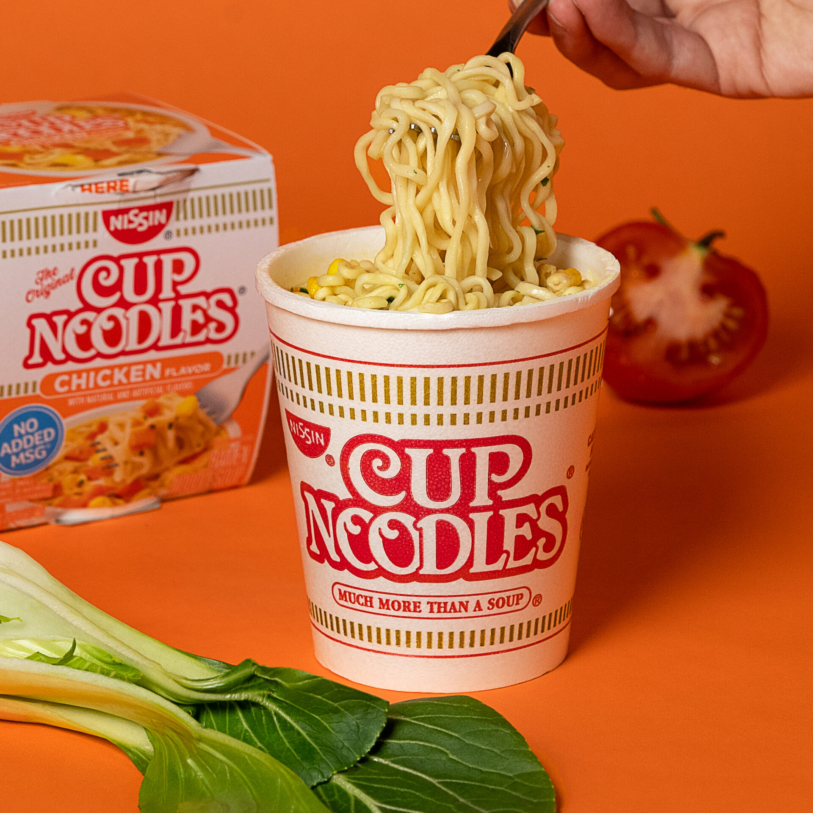

Instant Ramen Recipe!

Description:
Basically guys this is what you make when you're lazy and don't wanna cook
Ingredients Needed:
- Cup-A-Noodles
- Boiled Water
Steps to make:
- Open the ramen
- Boil water and pour it into the ramen
- Wait about 15-20 minutes
- Eat up and most of all, ENJOY!